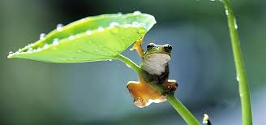

또, 개구리는 양서류 동물로서 피부호흡을 하기 때문에 겨울잠을 자야 한다. 양서류가 피부호흡을 하기 위해서는 물이 필요하다. 피부가 물기에 젖어야 피부호흡을 할 수 있는 것이다. 그런데 겨울이 되면 물이 얼어버리기 때문에 개구리의 피부는 건조해져서 피부호흡을 못하게 된다. 그래서 겨울잠을 자게 된다. 그런데 개구리는 겨울잠을 자는 동안 체온이 영하로 내려가도 얼어 죽지 않는다. 체내의 당분 농도가 높아서, 체액의 어는 점을 낮추기 때문에 그럴 수 있다. 겨울잠을 자는 개구리는 혈액 1리터 당 45그램의 당분을 지니며, 인간이 혈액 1리터 당 4그램의 당분만 초과해도 당뇨병에 걸리는 것에 비하면 높은 수치이다.
